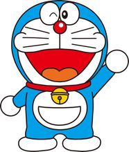

| 哆啦A梦 本作的主角。名字的意思是铜锣卫门。心肠好，乐于助人，做事很拼命（见2112年哆啦A梦诞生记）但却心肠软。每次大雄遇到困难，他总会帮大雄。但有时会用愚蠢的方法来帮助大雄。当它吃不到铜锣烧或人们叫他狸猫时，脾气会非常暴躁。 他原来是和妹妹一样，黄色的，而且有耳朵，一天，小世为了感谢哆啦A梦照顾他，做了一个哆啦A梦的泥娃娃，可就是耳朵老做不 |
 |
| 野比大雄 野比大雄是《哆啦a梦》中的第二主角，一切故事因他而展开，是唯一一个每一集都登场的人物。大雄性格懒惰，做事只有三分钟热情；不肯读书，上课不专心，总是睡觉及做白日梦，测验平均每五次就得一次0分（有一次考试得了100分，却被哆啦A梦以为抄袭。后来哆啦A梦为了补偿用了"宣传机"。）运动很差，赛跑经常得倒数第一，（但在一集中有比大雄更差的同学来到了大雄学校. |
 |
| 源静香 源静香是《哆啦A梦》中的女主角。大雄的好朋友，也是大雄未来的妻子。聪明乖巧、成绩优秀（只考了85分就挨骂，参见21卷《快活大道》）、心地善良、善解人意，深受大家喜爱，是大雄他们梦中的情人。缺点是有洁癖（一天要洗三次澡），而且拉小提琴拉出的琴声甚至比胖虎的歌还具有破坏力。长大之后嫁给大雄，静香愿意嫁给大雄是因为他有一颗善良，关心别人的心，他会因别人的成功而高兴，也会因别人的忧愁而伤心，绝不是静香可怜大雄才下嫁给他的。（根据《大雄的结婚前夜》得出） |
 |
| 刚田武 刚田武是《哆啦A梦》的主要角色之一。强壮有力，情绪暴躁，欺负弱小，是个粗鲁的孩子王，对于不顺眼的人或事物便以暴力相向。目标是当歌星，他经常在空地开演唱会以武力逼迫大雄、小夫、静香等人来听（由于他的歌声非常差劲（还吓退过妖怪——见剧场版《魔界大冒险》）所以大雄他们经常为此事苦恼），做的菜味道也很差劲。优点是勇敢、有正义感，是个真正的男子汉，在大长篇里有许哆例子。例如第三集中，胖虎勇于承担责任，去面对危险。对于同伴，总是以大哥哥的身份照顾大家，是个有情有义的人物，在超长篇（剧场版）中，胖虎为朋友着想和负责任的行为也令人无比感动。 |
|
| 骨川小夫 骨川小夫是《哆啦A梦》的主要角色之一。家境富裕，娇生惯养，成绩不太差，性格自大、骄傲、逢迎谄媚、爱炫耀。胖虎的好搭档，大雄的又一敌人。欺软怕硬，狡猾，总把大雄当成是最便宜的玩具。每每得到一件新奇的物品的时候，都要在小伙伴中间炫耀一番，还趁机羞辱大雄，往往因此引起大雄的嫉妒胡乱夸下海口。难得得到一次100分他不像往常一样自己宣布，而是很有心计地故意对自己的分数遮遮掩掩妄图引起别人的好奇心，可惜被单纯的大雄和哆啦a梦误以为他考砸了还好心地帮忙摧毁了试卷。很聪明，可是都不用在学习中，每每想到的就是捉弄别人、吹嘘、习惯性地说谎，欺负小朋友。但是在关键时刻很勇敢，有时事情到了不可救药的地步会来央求机器猫帮忙。自认为长得不错，就是矮了点。人生目标是当个社长。 |
哆啦A梦